The purpose of this document is to explain the link between theoretical and experimental  and to
describe in general how the theoretical
and to
describe in general how the theoretical  is calculated from from ab initio data by plugins in Mantid.
is calculated from from ab initio data by plugins in Mantid.
During an inelastic neutron scattering experiment, a sample is exposed to neutron flux and a response is recorded in the form of dynamical structure factor, .
In principle, one obtains a vibrational spectrum that can be quite difficult to analyse; in crystalline materials this is
related to the wavevector-dependent phonon spectrum.
In order to better understand experimental outputs, one can compare with results from modelling.
Ab initio calculations, especially within density-functional theory (DFT) [1], have proven quite successful in predicting vibrational spectra.

The usual workfow for calculating phonon spectra within DFT is presented in the figure above. First, one defines an
initial guess for the structure of interest.
The initial guess should be as close as possible to an experimental structure, and is usually derived from elastic X-ray and/or neutron scattering measurements.
Then the structure parameters are locally optimised within DFT, finding the nearest structure that minimises the DFT energy.
At this point, there should be no net force on the atoms.
For this “relaxed” structure the dynamical matrix is calculated, either by finite displacements or perturbation theory.
The dynamical matrix is related to the Hessian (the second derivative of the system Hamiltonian with respect to atomic displacements) by a Fourier transform:
the eigenvectors obtained from diagonalisation of this matrix are atomic displacements
and the eigenvalues are the squared frequencies of the corresponding movements.
These vibrational modes are related to the fundamental vibrational excitations of the system;
using this displacement and frequency information one can calculate theoretical .
In Abins this is calculated for each atom separately,
then the total spectrum is obtained as a sum over all atomic contributions.

In DFT studies of solid materials, the simulation region is generally a finite unit cell with periodic boundary conditions. This models an infinite perfect crystal; in order to compare such calculations with powder experiments, orientational averaging should be considered. Usually a semi-empirical model is applied [2], [3]:
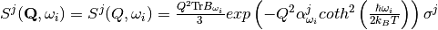
where  and
and  are tensors created from atomic displacements in the following way:
are tensors created from atomic displacements in the following way:


with
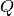 – momentum transfer due to neutron scattering. The momentum transfer  is a technically a vector. However, the powder averaging of :math: S allows it to be represented as a scalar.
is a technically a vector. However, the powder averaging of :math: S allows it to be represented as a scalar.
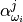 – semi-empirical parameter calculated as: 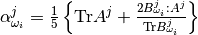
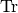 – trace operation
– tensor contraction operation
 – indicates -th atoms
– indicates -th atoms
 – indicates -th energy transition
– indicates -th energy transition
 – frequency for -th transition in
– frequency for -th transition in  (called also mode or fundamental)
(called also mode or fundamental)
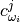 – atomic displacement for -th atom and -th frequency in atomic units
 – mass of -th atom in atomic units
– mass of -th atom in atomic units
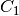 –  expressed in spectroscopic units
expressed in spectroscopic units
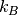 – Boltzmann constant
 – temperature in K
– temperature in K
 – cross-section for -th atom
– cross-section for -th atom
The formula above covers the first-order quantum events – specifically the transitions  for each phonon.
The 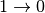 events (i.e. energy to the scattered neutron) would be infrequent at experimental conditions and are neglected.
In order to reconstruct the full spectrum one has to also consider higher-order quantum events.
For second-order quantum events one should not only
consider transitions
for each phonon.
The 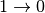 events (i.e. energy to the scattered neutron) would be infrequent at experimental conditions and are neglected.
In order to reconstruct the full spectrum one has to also consider higher-order quantum events.
For second-order quantum events one should not only
consider transitions  , but also simultaneous transitions ,
, but also simultaneous transitions ,  for different phonons.
Within the harmonic approximation all second-order transitions form the following set:
for different phonons.
Within the harmonic approximation all second-order transitions form the following set:  .
The cardinality of this set is
.
The cardinality of this set is  , where
, where  is a number of fundamentals.
In practice one can reduce this number by taking into consideration a realistic energy window
and neglecting those
is a number of fundamentals.
In practice one can reduce this number by taking into consideration a realistic energy window
and neglecting those  for which
for which  or 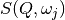 is negligible.
Within the harmonic approximation each phonon is treated as independent harmonic quantum oscillator. The formula for
or 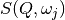 is negligible.
Within the harmonic approximation each phonon is treated as independent harmonic quantum oscillator. The formula for  is as follows [4]:
is as follows [4]:
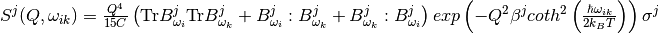
where
 .
.
is a constant: if  then
then  , otherwise
, otherwise  .
.
Similarly, one can define the contribution for the third quantum order events (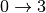, simultaneous , ,  for different oscillators, etc.) [4]:
for different oscillators, etc.) [4]:
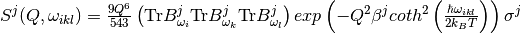.
Usually in order to reconstruct the experimental spectrum it is sufficient to include contributions up to the fourth order ( , simultaneous , , ,
, simultaneous , , ,  for different oscillators, etc.)
for different oscillators, etc.)
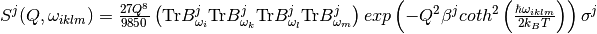. [4]
In the same way as for the second quantum order events, one can reduce the number of energy transitions by imposing the appropriate energy window and neglecting small .
After evaluating the above equations one obtains the discrete for each quantum order and for each atom: 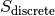.
In order to compare these functions with an experimental spectrum one has to convolve them with experimental resolution
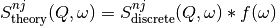
where:
– indicates -th atoms
 – indicates -order event
– indicates -order event
 – is a resolution function
– is a resolution function
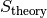 – is theoretical to be compared with experimental results.
For TOSCA and TOSCA-like instruments has the following form:

where:

with , , as constants.
Moreover, in case of TOSCA and TOSCA-like instruments, the length of momentum transfer depends on frequency (indirect geometry spectrometer).
The formula for  is as follows:
is as follows:
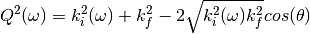
where:
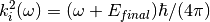 expressed in the spectroscopic units

with
 – being the final energy on the crystal analyser in and
– being the final energy on the crystal analyser in and
 – is the crystal analyser angle in radians. (TOSCA has two angles to consider, corresponding to the forward- and back-scattering detectors).
– is the crystal analyser angle in radians. (TOSCA has two angles to consider, corresponding to the forward- and back-scattering detectors).
Calculation of theoretical from ab initio results is implemented in Abins. At the moment Abins supports phonon outputs from the
CASTEP, CRYSTAL, Gaussian and DMOL3 ab initio codes.
The Gamma-point frequencies are used and phonon bands are assumed to be flat throughout the Brillouin zone; this assumption is primarily applicable for incoherent scattering in molecular crystals.
Instrument parameters are included for
TOSCA and should be useful for TOSCA-like instruments.
If Abins is used as part of your data analysis routines, please cite the relevant reference [5].
| [1] |
|
| [2] |
|
| [3] |
|
| [4] | (1, 2, 3)
|
| [5] |
|
Category: Concepts